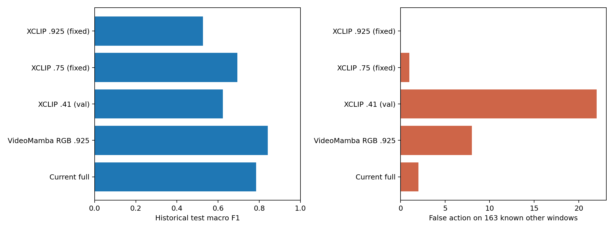
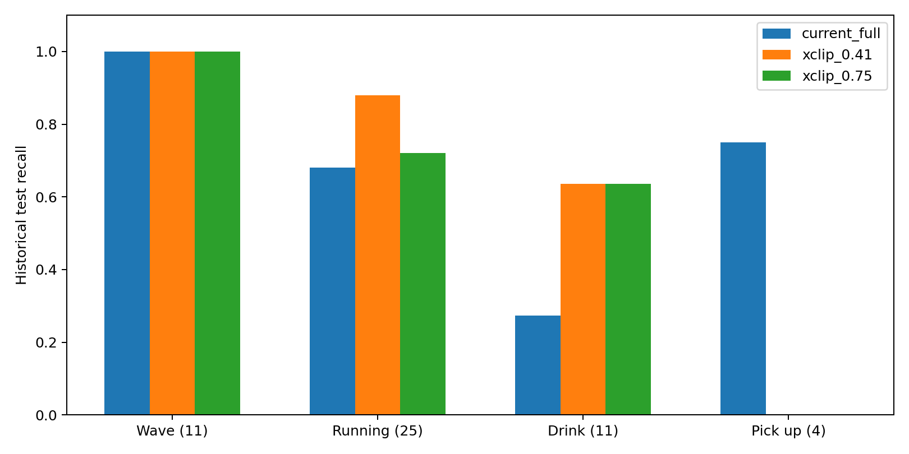

XCLIP逐人零样本对照
完整长视频阈值0.4；旧短视频对照阈值0.41（验证集选择）。增强＋逐人RGB，无骨架、物体先验。短片左边为当前VideoMamba完整流程的最终标签，右边为XCLIP。
报告 · 全部数值 · 跑动速度先验


存储_一层展厅5#屏_20261016145000_20261016145900.avi / 完整无骨架流程，阈值0.4
vlc-record-2026-10-20-08h45m12s-存储_一层展厅内中心屏_20261005130000_20261005135959_1.avi-.avi / 完整无骨架流程，阈值0.4
存储_一层展厅内中心屏_20261016144800_20261016145200.avi / 完整无骨架流程，阈值0.4
追逐24.mp4 / 旧test，固定人物窗对照，XCLIP阈值0.41
追逐25.mp4 / 旧test，固定人物窗对照，XCLIP阈值0.41
挥手28.mp4 / 旧test，固定人物窗对照，XCLIP阈值0.41
喝水26.mp4 / 旧test，固定人物窗对照，XCLIP阈值0.41
other100.mp4 / 旧test，固定人物窗对照，XCLIP阈值0.41
捡东西23.mp4 / 旧test，固定人物窗对照，XCLIP阈值0.41
追逐38.mp4 / 旧val，固定人物窗对照，XCLIP阈值0.41
追逐30.mp4 / 旧val，固定人物窗对照，XCLIP阈值0.41
挥手27.mp4 / 旧val，固定人物窗对照，XCLIP阈值0.41
喝水27.mp4 / 旧val，固定人物窗对照，XCLIP阈值0.41
other104.mp4 / 旧val，固定人物窗对照，XCLIP阈值0.41
捡东西16.mp4 / 旧val，固定人物窗对照，XCLIP阈值0.41